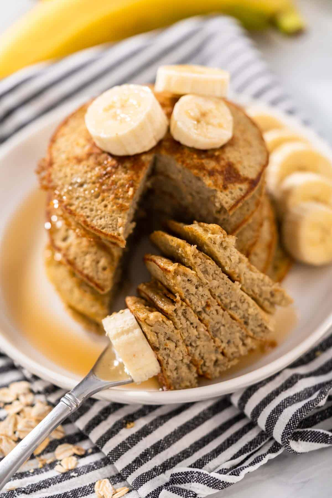

Home
Banana Oat Pancakes
<
Description
Fluffy, gluten-free banana oat pancakes made with just three simple
ingredients: banana, egg, and oats. A quick and easy breakfast that's
naturally sweet and ready in just minutes.
Ingredients
- 1 Banana
- 1 Egg
- ⅓ cup quick oats
Steps
- Heat a skillet over medium heat.
- Add the banana, egg, oats to a blender. Blend until smooth.
- Grease the hot pan with butter or non-stick spray.
- Pour about ¼ cup of batter per pancake into the pan.
- Cook for 2–3 minutes on each side until golden brown.
- Remove from the pan, add your favorite toppings, and enjoy!